Timing Salto
Aggiornamento: 2026-11-05. Controllati visivamente 42 personaggi su 42. Il frame selezionato di massima altezza inizia a 500 ms (0,5 s) dalla partenza, con ciclo comune di 1000 ms a velocità 1x.
Salita e discesa hanno framerate adattati a ciascuno spritesheet: FPS prima dell’apice = indice del frame apice (da 0) × 1000 / 500 ms; FPS da apice a fine ciclo = frame rimanenti × 1000 / 500 ms. Il frame apice è incluso nella seconda fase. Tutti i frame restano in ordine e i pixel non vengono modificati. I numeri in tabella partono da 1. Un plateau può includere pose di quota equivalente prima o dopo il marcatore; nei casi di taglio al bordo l’apice è stimato dal corpo visibile.
“Riproduci tutte” riparte dal primo frame e mantiene l’allineamento anche nei cicli successivi e con caricamento progressivo. Il tempo di 500 ms vale a 1x; i moltiplicatori modificano anche il tempo dell’apice. Le selezioni sono legate agli ID sorgente in animation/jump-timing.json: sostituendo uno spritesheet occorre rivederne l’apice.
Personaggi senza salto disponibile (0): nessuno.
| Personaggio | Apice scelto | Frame apice | Apice a | FPS salita / seconda fase | Ciclo | Note |
|---|---|---|---|---|---|---|
| ALBERTO | 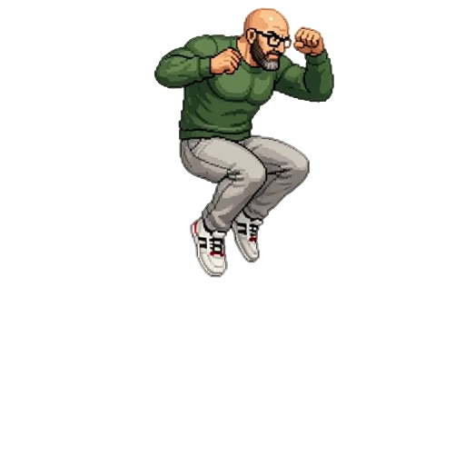 | 24 / 49 | 500 ms | 46 / 52 | 1000 ms | Apice scelto visivamente; in caso di plateau, primo frame rappresentativo alla massima altezza. |
| ALEX | 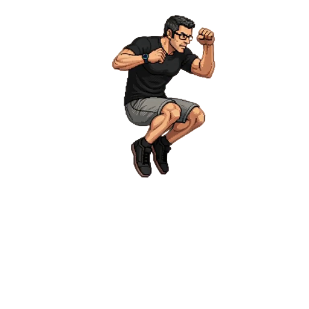 | 20 / 48 | 500 ms | 38 / 58 | 1000 ms | Apice scelto visivamente; in caso di plateau, primo frame rappresentativo alla massima altezza. |
| ANGELA | 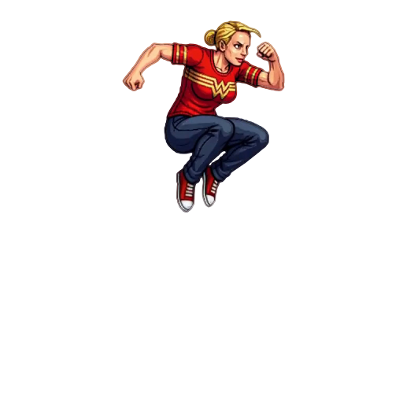 | 22 / 48 | 500 ms | 42 / 54 | 1000 ms | Apice scelto visivamente; in caso di plateau, primo frame rappresentativo alla massima altezza. |
| ANTONINO | 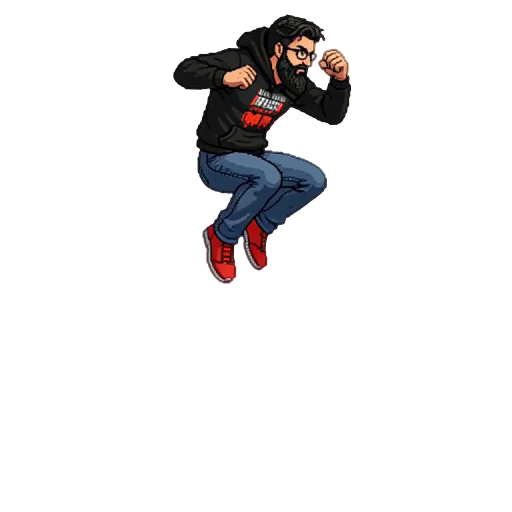 | 22 / 45 | 500 ms | 42 / 48 | 1000 ms | Apice scelto visivamente; in caso di plateau, primo frame rappresentativo alla massima altezza. |
| BARBARA-FIOCCA | 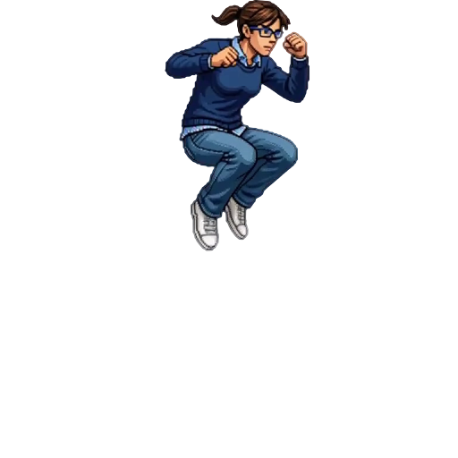 | 20 / 45 | 500 ms | 38 / 52 | 1000 ms | Alla quota massima i capelli toccano il bordo superiore; apice stimato dalla posa visibile e dalla traiettoria. |
| Bonazzi | 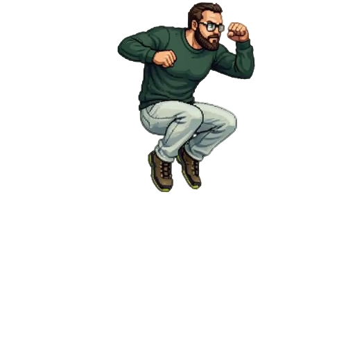 | 20 / 48 | 500 ms | 38 / 58 | 1000 ms | Apice scelto visivamente; in caso di plateau, primo frame rappresentativo alla massima altezza. |
| Chiara-Molina | 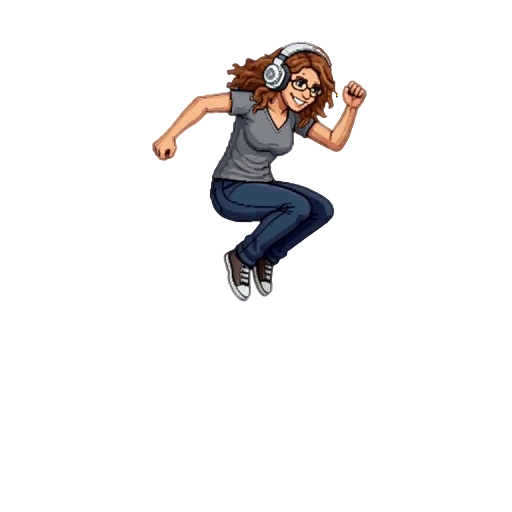 | 23 / 48 | 500 ms | 44 / 52 | 1000 ms | Apice scelto visivamente; in caso di plateau, primo frame rappresentativo alla massima altezza. |
| CHIARA-TONIOL | 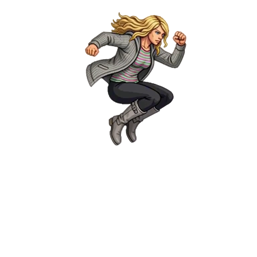 | 22 / 47 | 500 ms | 42 / 52 | 1000 ms | Apice scelto visivamente; in caso di plateau, primo frame rappresentativo alla massima altezza. |
| CONDELLO | 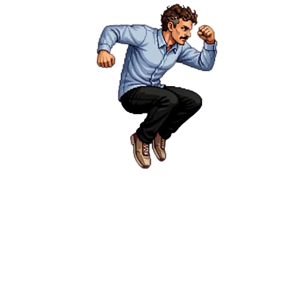 | 25 / 47 | 500 ms | 48 / 46 | 1000 ms | Apice scelto visivamente; in caso di plateau, primo frame rappresentativo alla massima altezza. |
| DINO | 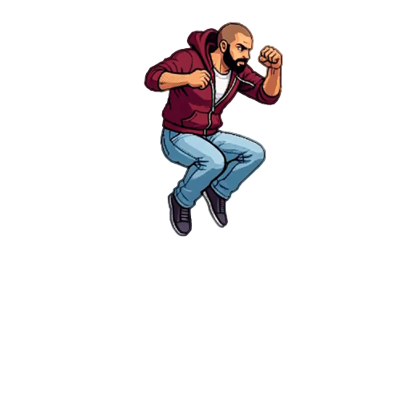 | 23 / 44 | 500 ms | 44 / 44 | 1000 ms | Apice scelto visivamente; in caso di plateau, primo frame rappresentativo alla massima altezza. |
| Elisa | 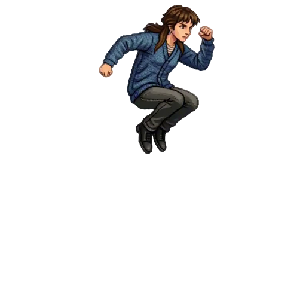 | 21 / 45 | 500 ms | 40 / 50 | 1000 ms | Apice scelto visivamente; in caso di plateau, primo frame rappresentativo alla massima altezza. |
| EMMA | 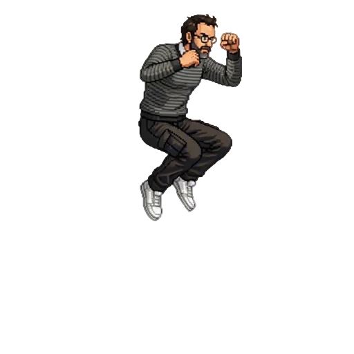 | 25 / 48 | 500 ms | 48 / 48 | 1000 ms | Apice scelto visivamente; in caso di plateau, primo frame rappresentativo alla massima altezza. |
| EROS | 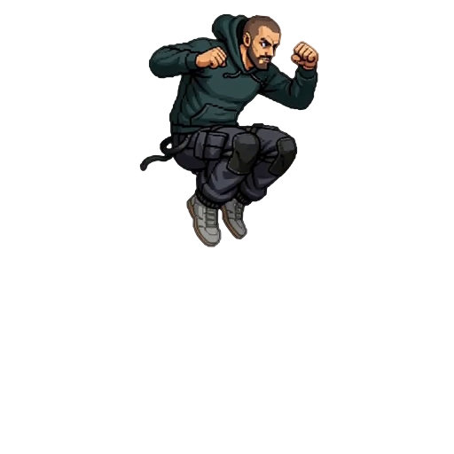 | 24 / 45 | 500 ms | 46 / 44 | 1000 ms | Apice scelto visivamente; in caso di plateau, primo frame rappresentativo alla massima altezza. |
| FABIO-CLARA | 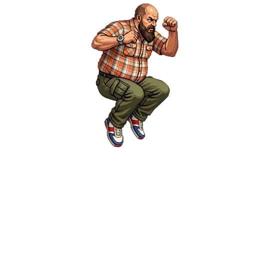 | 23 / 44 | 500 ms | 44 / 44 | 1000 ms | Apice scelto visivamente; in caso di plateau, primo frame rappresentativo alla massima altezza. |
| FARA | 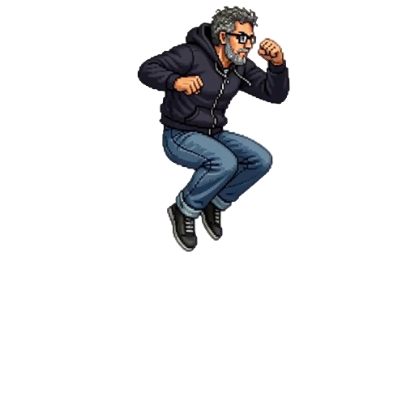 | 21 / 45 | 500 ms | 40 / 50 | 1000 ms | Apice scelto visivamente; in caso di plateau, primo frame rappresentativo alla massima altezza. |
| FRA-AMATO | 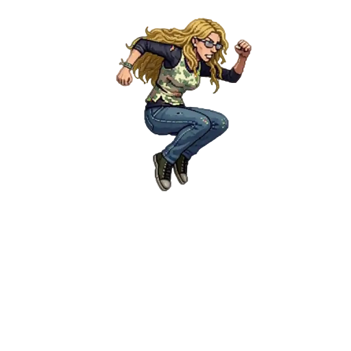 | 22 / 48 | 500 ms | 42 / 54 | 1000 ms | Apice scelto visivamente; in caso di plateau, primo frame rappresentativo alla massima altezza. |
| FRA-TAVARONE | 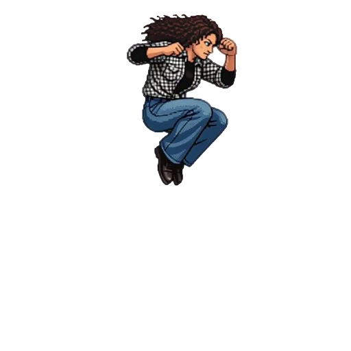 | 19 / 45 | 500 ms | 36 / 54 | 1000 ms | Apice scelto visivamente; in caso di plateau, primo frame rappresentativo alla massima altezza. |
| FRANCESCA-RIVELLA | 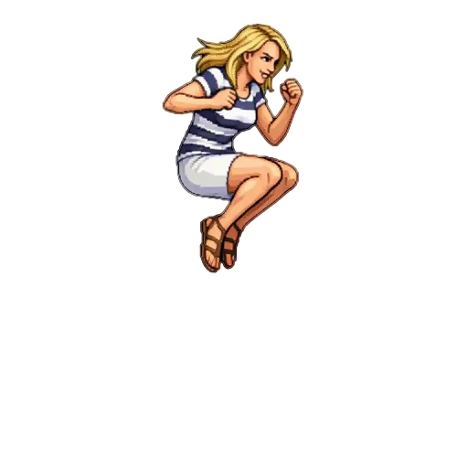 | 19 / 47 | 500 ms | 36 / 58 | 1000 ms | Apice scelto visivamente; in caso di plateau, primo frame rappresentativo alla massima altezza. |
| FRANCESCO-LEONI | 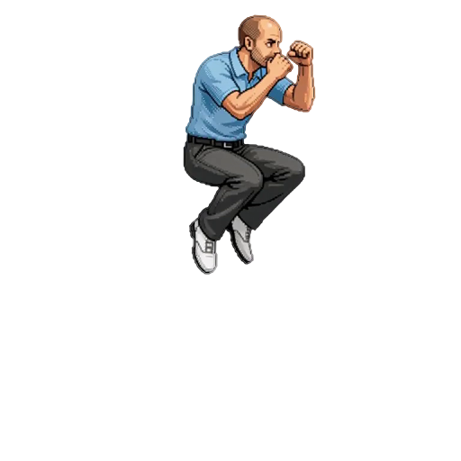 | 22 / 45 | 500 ms | 42 / 48 | 1000 ms | Apice scelto visivamente; in caso di plateau, primo frame rappresentativo alla massima altezza. |
| GENNARO | 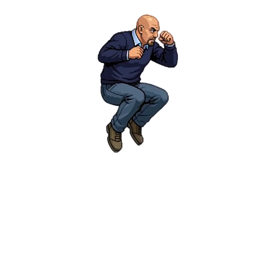 | 22 / 44 | 500 ms | 42 / 46 | 1000 ms | Apice scelto visivamente; in caso di plateau, primo frame rappresentativo alla massima altezza. |
| Giordano | 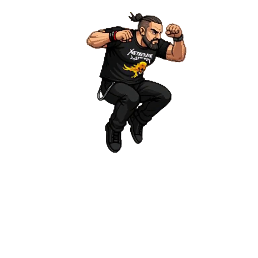 | 26 / 45 | 500 ms | 50 / 40 | 1000 ms | Apice scelto visivamente; in caso di plateau, primo frame rappresentativo alla massima altezza. |
| GIORGIO | 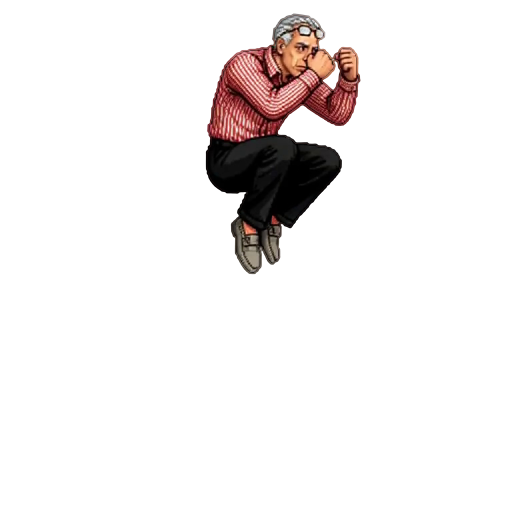 | 15 / 35 | 500 ms | 28 / 42 | 1000 ms | Apice scelto visivamente; in caso di plateau, primo frame rappresentativo alla massima altezza. |
| JERRY | 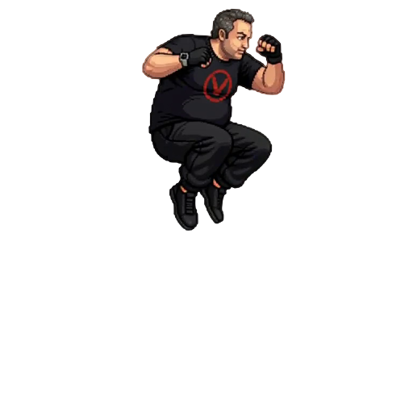 | 24 / 48 | 500 ms | 46 / 50 | 1000 ms | Apice scelto visivamente; in caso di plateau, primo frame rappresentativo alla massima altezza. |
| LIVIO | 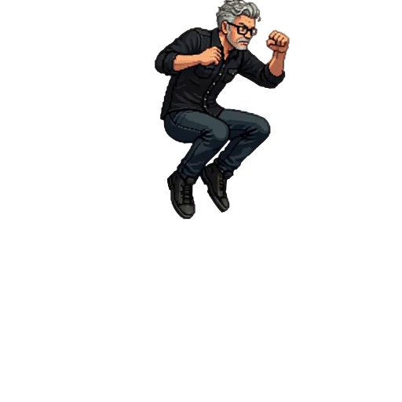 | 22 / 40 | 500 ms | 42 / 38 | 1000 ms | Alla quota massima i capelli toccano il bordo superiore; apice stimato dalla posa visibile e dalla traiettoria. |
| LUANA | 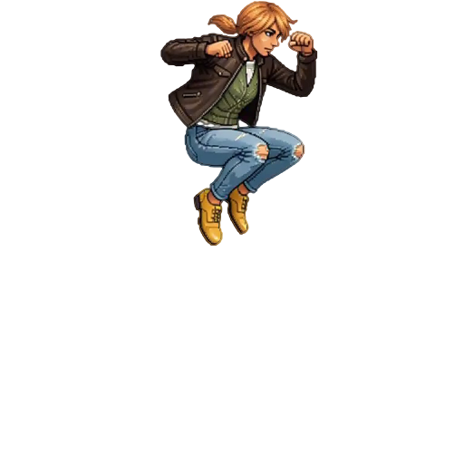 | 22 / 46 | 500 ms | 42 / 50 | 1000 ms | Apice scelto visivamente; in caso di plateau, primo frame rappresentativo alla massima altezza. |
| MANU | 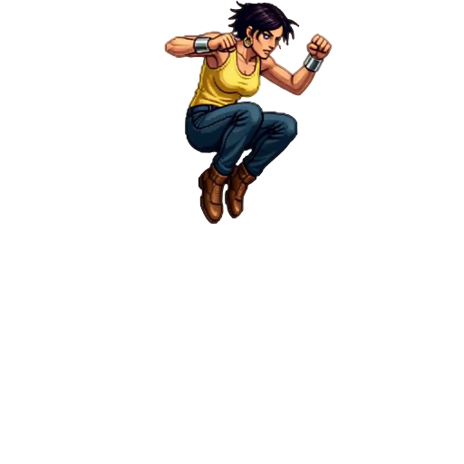 | 24 / 45 | 500 ms | 46 / 44 | 1000 ms | Apice scelto visivamente; in caso di plateau, primo frame rappresentativo alla massima altezza. |
| MARCO-BALPO | 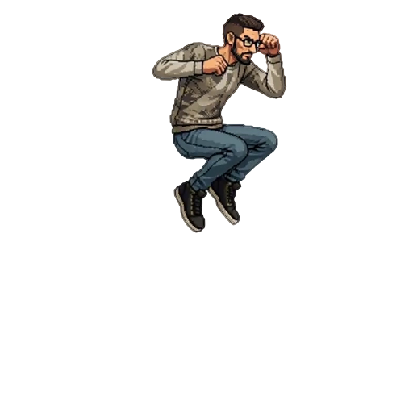 | 24 / 45 | 500 ms | 46 / 44 | 1000 ms | Apice scelto visivamente; in caso di plateau, primo frame rappresentativo alla massima altezza. |
| Marco-Rossetti | 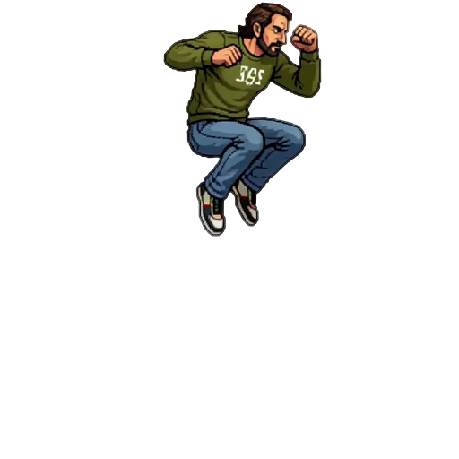 | 25 / 45 | 500 ms | 48 / 42 | 1000 ms | Apice scelto visivamente; in caso di plateau, primo frame rappresentativo alla massima altezza. |
| MARIO | 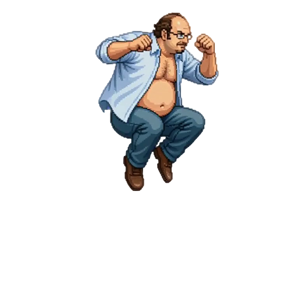 | 25 / 48 | 500 ms | 48 / 48 | 1000 ms | Apice scelto visivamente; in caso di plateau, primo frame rappresentativo alla massima altezza. |
| MARSAN | 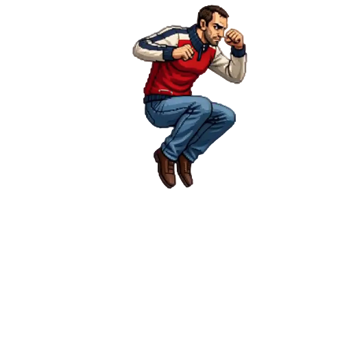 | 29 / 46 | 500 ms | 56 / 36 | 1000 ms | Apice scelto visivamente; in caso di plateau, primo frame rappresentativo alla massima altezza. |
| MARTINI | 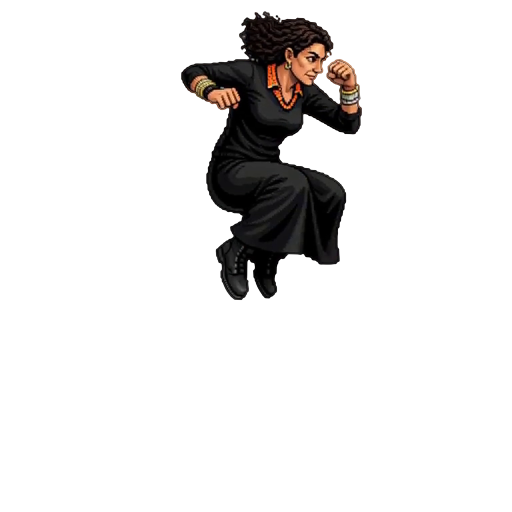 | 25 / 45 | 500 ms | 48 / 42 | 1000 ms | Apice scelto visivamente; in caso di plateau, primo frame rappresentativo alla massima altezza. |
| MATTEO | 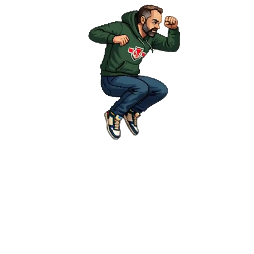 | 17 / 38 | 500 ms | 32 / 44 | 1000 ms | Apice scelto visivamente; in caso di plateau, primo frame rappresentativo alla massima altezza. |
| MIKE | 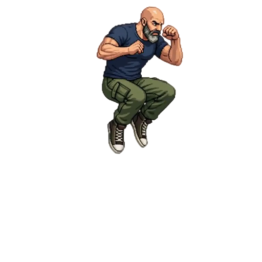 | 23 / 48 | 500 ms | 44 / 52 | 1000 ms | Apice scelto visivamente; in caso di plateau, primo frame rappresentativo alla massima altezza. |
| MORI | 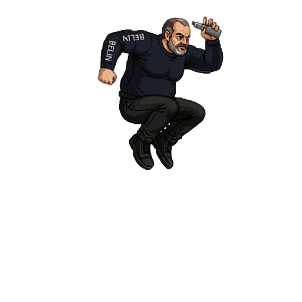 | 24 / 48 | 500 ms | 46 / 50 | 1000 ms | Apice scelto visivamente; in caso di plateau, primo frame rappresentativo alla massima altezza. |
| Oscar | 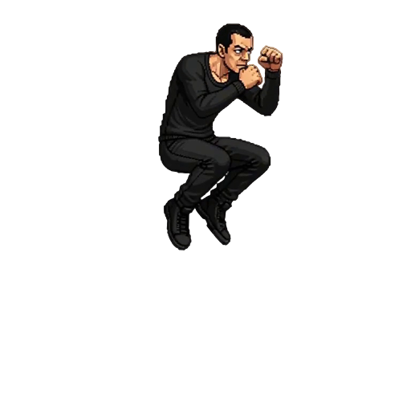 | 22 / 47 | 500 ms | 42 / 52 | 1000 ms | Apice scelto visivamente; in caso di plateau, primo frame rappresentativo alla massima altezza. |
| PEIROLO | 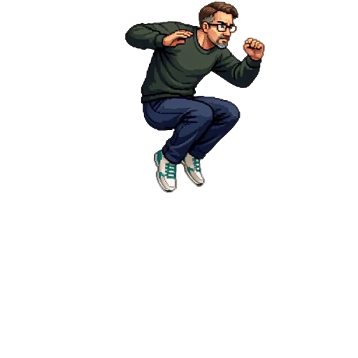 | 22 / 44 | 500 ms | 42 / 46 | 1000 ms | Apice scelto visivamente; in caso di plateau, primo frame rappresentativo alla massima altezza. |
| PEPPO | 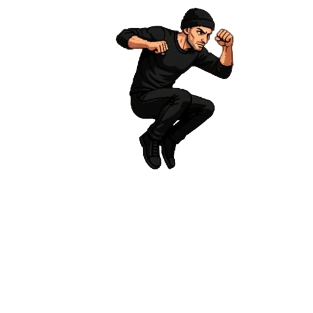 | 27 / 47 | 500 ms | 52 / 42 | 1000 ms | Apice scelto visivamente; in caso di plateau, primo frame rappresentativo alla massima altezza. |
| PIPPO | 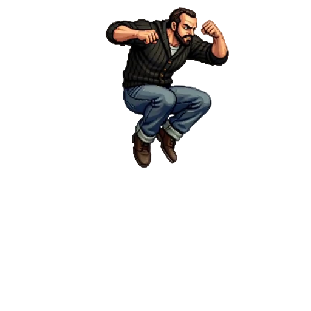 | 25 / 45 | 500 ms | 48 / 42 | 1000 ms | Apice scelto visivamente; in caso di plateau, primo frame rappresentativo alla massima altezza. |
| SBOZ | 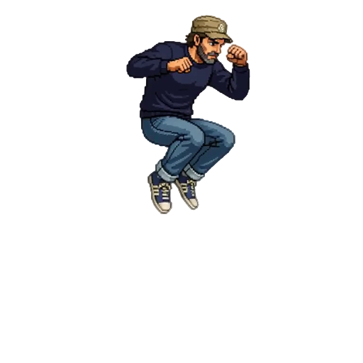 | 18 / 44 | 500 ms | 34 / 54 | 1000 ms | Apice scelto visivamente; in caso di plateau, primo frame rappresentativo alla massima altezza. |
| Simona | 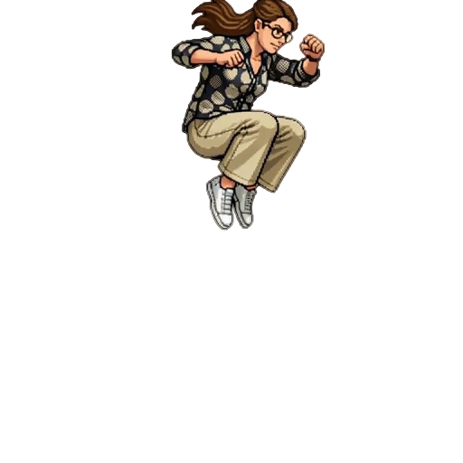 | 25 / 40 | 500 ms | 48 / 32 | 1000 ms | Apice stimato dal corpo visibile al frame 25; capelli al bordo superiore. Riesportazione Jump Custom 2 verificata sui 40 frame del taglio salvato. |
| TOMMASO | 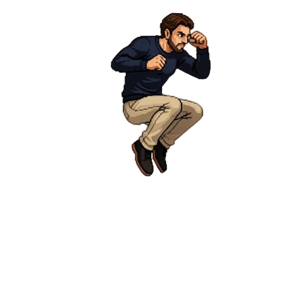 | 24 / 45 | 500 ms | 46 / 44 | 1000 ms | Apice scelto visivamente; in caso di plateau, primo frame rappresentativo alla massima altezza. |
| ZICHELLA | 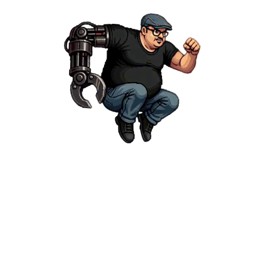 | 22 / 45 | 500 ms | 42 / 48 | 1000 ms | Apice scelto visivamente; in caso di plateau, primo frame rappresentativo alla massima altezza. |